Тренды
Примерьте новый формат на свой контент.
OWAI собирает ваш образ, помогает выбрать темы, создаёт посты, карусели и ролики. А затем публикует готовый контент по расписанию.
 Видео не загрузилось
Видео не загрузилось
 Видео не загрузилось
Видео не загрузилось
Примерьте новый формат на свой контент.
Ваш персонаж для фотографий и видео.

Разложите историю по карточкам.

Подготовьте текст и изображение для публикации.

Расскажите о своём деле в видео.
Листайте карточки →
OWAI задаёт вопросы о вашей жизни, работе и взглядах. Вы рассказываете, что с вами было, а из разговора появляются истории и темы для блога.
Толя не понимал, о чём писать, как рассказывать о своём продукте и для кого. Нанимал SMM-специалистов: они писали про природу и делали красивые рилсы. Но системно вести блог о продукте так и не получалось.
С OWAI он впервые полноценно и системно ведёт блог о своём продукте.
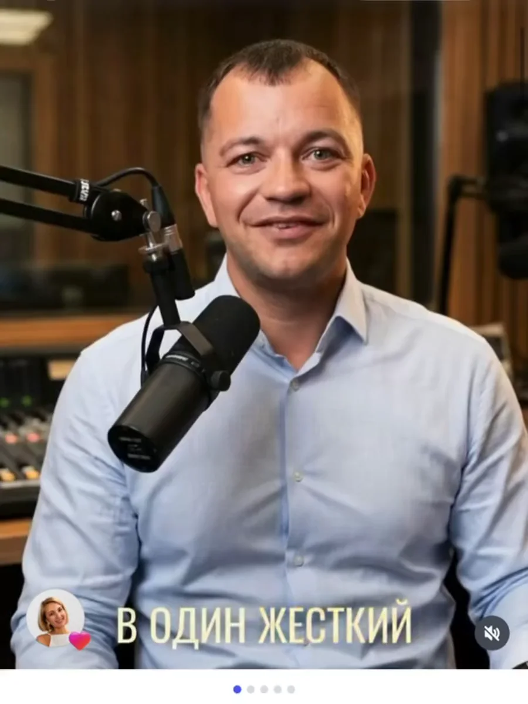
Видео не загрузилосьОдин раз соберите карту персонажа — и используйте свой образ в разных материалах.
Меняйте окружение, одежду и настроение кадра. Создавайте изображения и видео, которые остаются частью вашего визуального мира.
Как работает аватар ↗ Видео не загрузилось
Видео не загрузилось
Покажите образ, разверните аргумент в карусель или объясните тему голосом. Выберите формат под мысль и площадку.
 Видео не загрузилось
Видео не загрузилось
Видеоформат помогает передать интонацию и внимание к собеседнику.
Экспертные ролики ↗ Открыть видео ↗
Открыть видео ↗
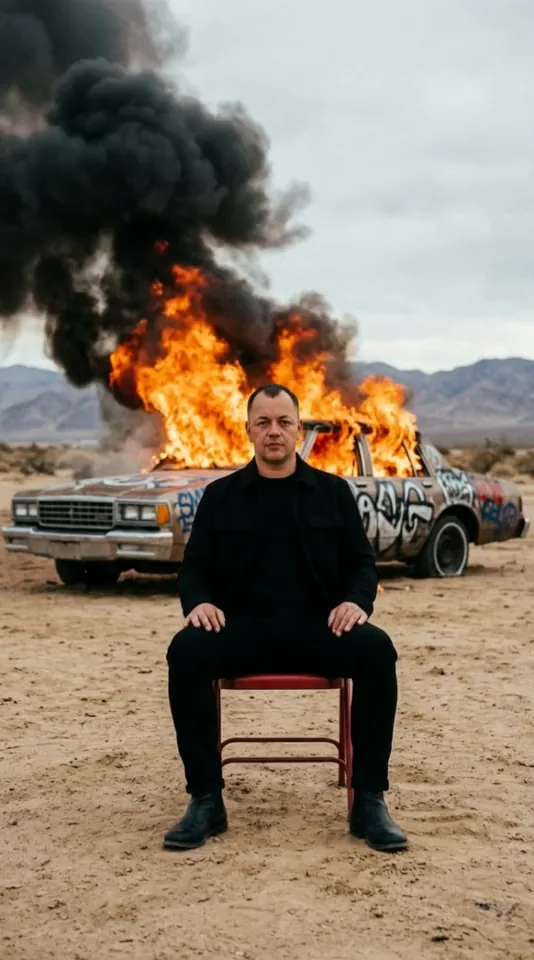
Открыть видео ↗ Открыть видео ↗
Открыть видео ↗
 Открыть видео ↗
Открыть видео ↗
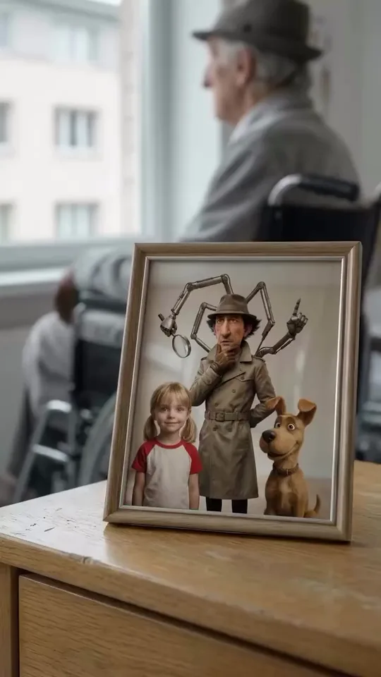
Открыть видео ↗ Открыть видео ↗
Открыть видео ↗
 Открыть видео ↗
Открыть видео ↗
 Открыть видео ↗
Открыть видео ↗
 Открыть видео ↗
Открыть видео ↗
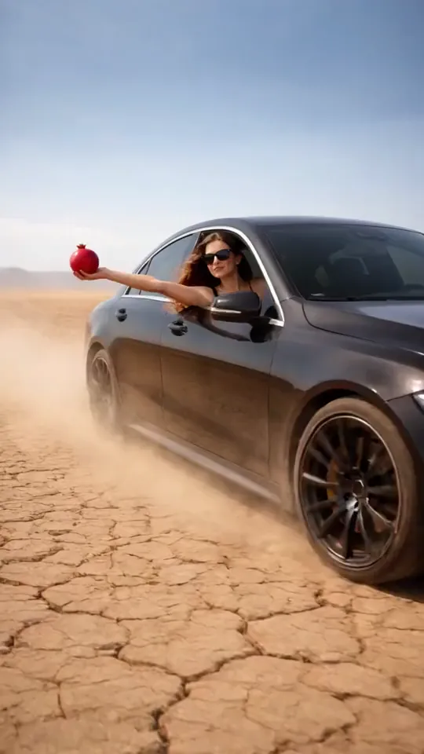
Открыть видео ↗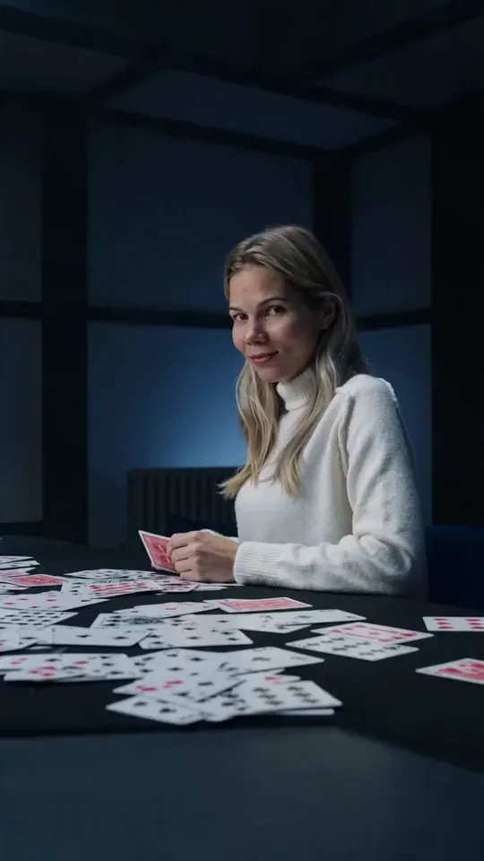
Открыть видео ↗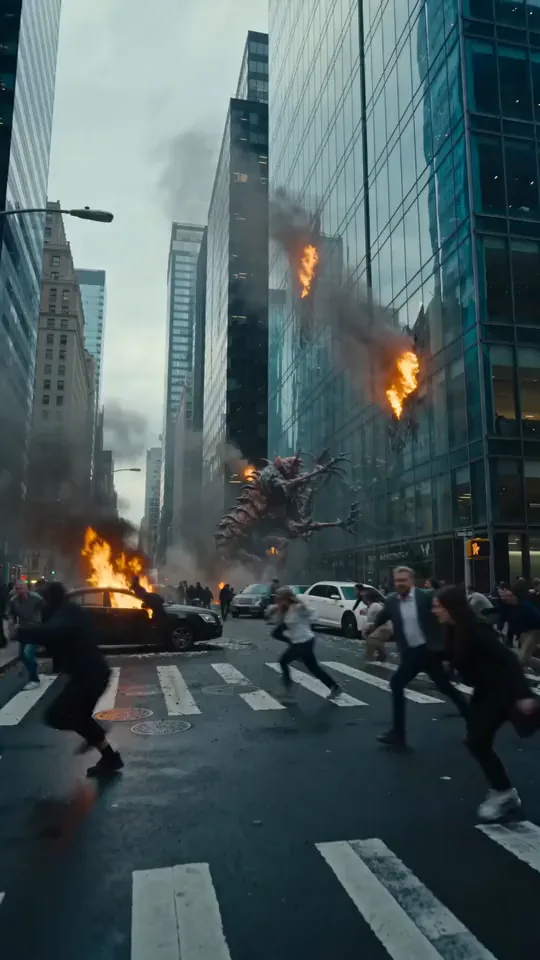
Открыть видео ↗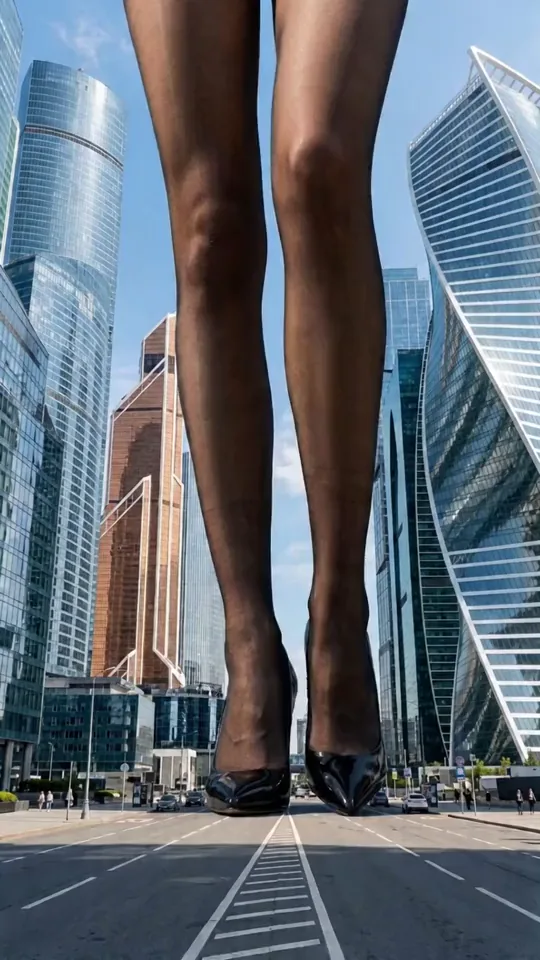
Открыть видео ↗ Открыть видео ↗
Открыть видео ↗
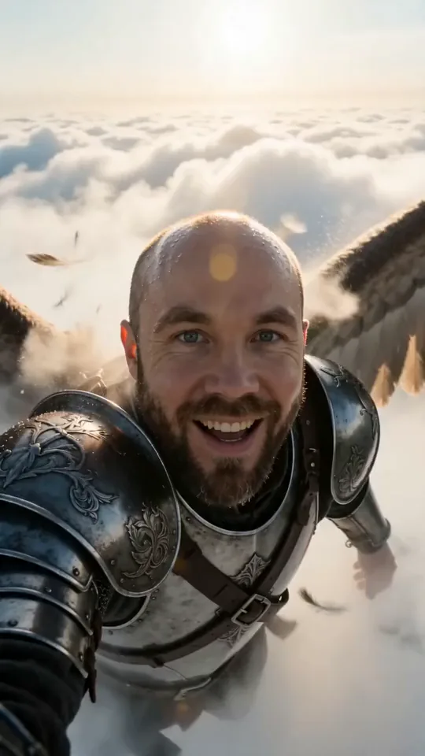
Открыть видео ↗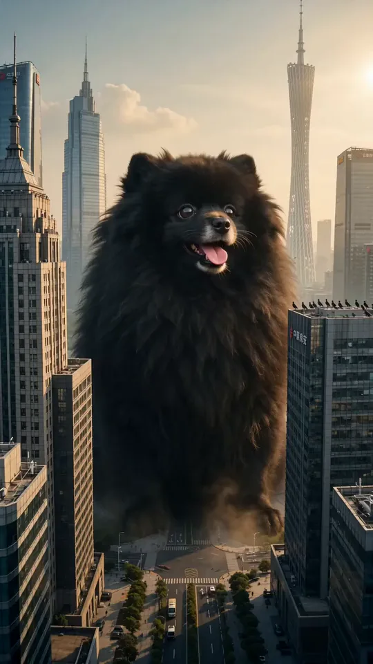
Открыть видео ↗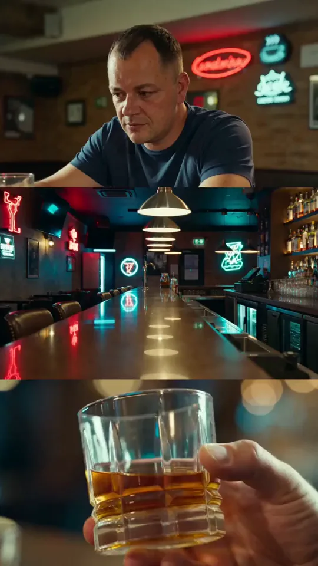
Открыть видео ↗Подготовьте материалы, выберите даты и подключите аккаунты. Создание, очередь и публикация связаны в одном процессе.
Пример недели: 14 публикаций для Instagram, TikTok, Facebook, Threads, Telegram и X. У каждой публикации свои день, время и формат.
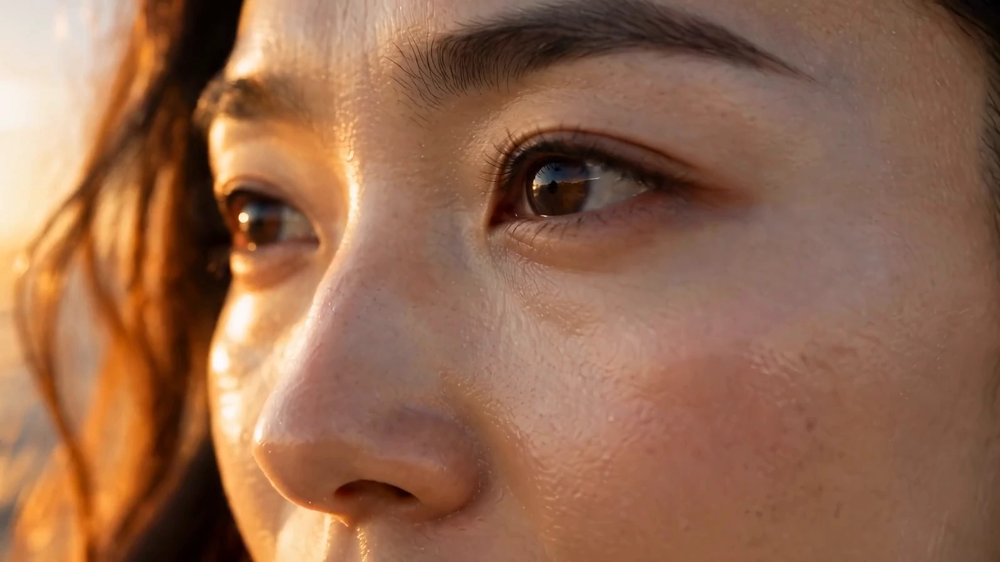
Видео не загрузилосьХарактер бренда, темы из жизни команды и контент для разных языковых аудиторий. Помогаем выстроить регулярную работу с социальными сетями.
OWAI для бизнесаПодача и визуальный язык складываются вокруг человека, его темы и аудитории.
От персонажа и темы
до готовой публикации.
Для самостоятельной работы в OWAI Studio. Корпоративный формат обсуждается отдельно.
$14/ мес.
$168 за год
Все возможности месячной подписки. Оплата на год вперёд.
Начать$29/ мес.
Ежемесячная подписка
Создание контента и работа с публикациями в одном месте.
НачатьДля начала достаточно выбрать тему и подготовить фотографии. OWAI помогает собрать текст и визуал; вы проверяете, насколько результат передаёт вашу мысль.
Да. Карта персонажа задаёт основу образа для изображений и видео. На странице аватара показан готовый пример и объяснено, как его использовать дальше.
Расписание отвечает за даты и очередь. Автопостинг — за отправку подготовленного материала в подключённую социальную сеть.
Да. Для корпоративных социальных сетей начинаем с характера бренда, аудитории и порядка работы с материалами. Подробности — в разделе «Для бизнеса».
Подготовьте свои фотографии и одну тему, которую хотите раскрыть. Начните с карты персонажа — затем попробуйте пост, карусель или ролик.
Открыть OWAI Studio